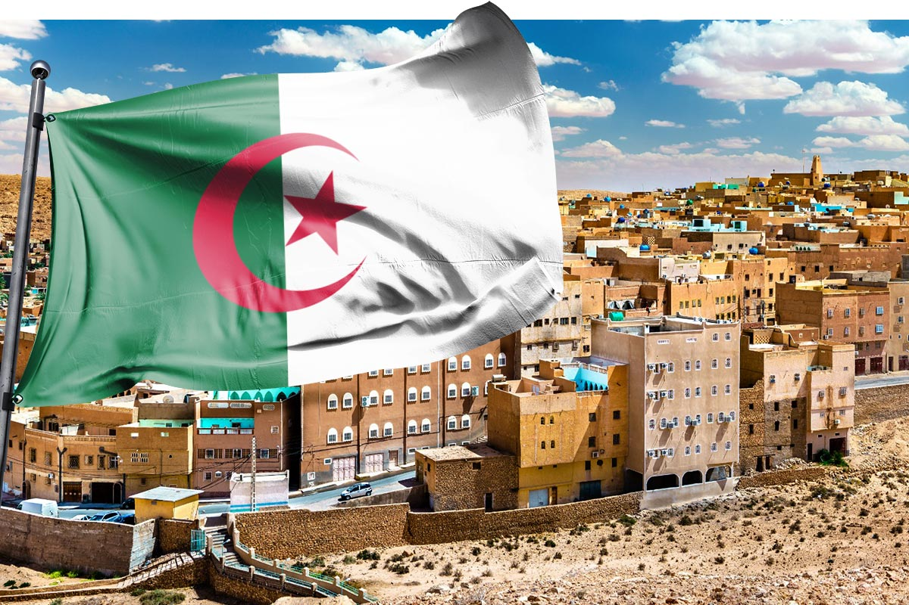
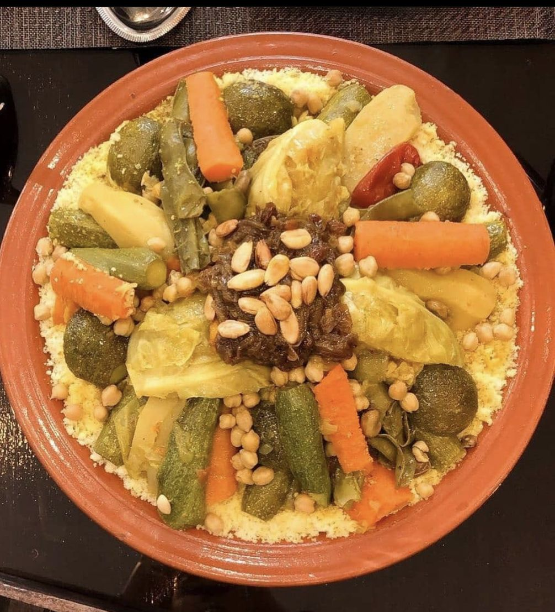

Algeria is an African country characterized by a rich cultural heritage that combines authenticity and diversity. Traditions are an essential part of the identity of the Algerian people, and are reflected in various social and family occasions. Among these ancient traditions couscous.

Definition
Couscous is one of the most iconic traditional dishes in North Africa, with deep historical and cultural roots dating back centuries. It is a staple food in Maghreb countries such as Morocco, Algeria, Tunisia, and Libya, representing a symbol of tradition and social customs.

History
Historical evidence suggests that couscous has been prepared in North Africa since the 9th century. Archaeological findings have uncovered cooking tools resembling the sieve used to make couscous in ancient sites across the region. The dish later spread to other parts of the world through trade and migration.
Ingredients
Main ingredients for making couscous include:
Semolina (main ingredient): Mixed with water and salt to form granules, then steamed.
Vegetables: Such as carrots, potatoes, squash, and onions.
Meat: Often lamb, chicken, or fish, depending on the region.
Chickpeas: Frequently added as a key ingredient.
Spices: Including saffron, cinnamon, cumin, and chili.
Broth: Made from meat and vegetables to flavor the dish.
Conclusion
Couscous is more than just a dish; it is a representation of the cultural and social heritage of North Africa. Its versatility in preparation and wide variety of flavors make it a beloved meal worldwide. As a symbol of generosity and community, couscous continues to hold a special place in the hearts of those who cherish its traditions.
Developed by: Hammou Oussama /sknder gouri /boudali adem /rbi3i montasser (Under the supervision of the professor بن طيب)